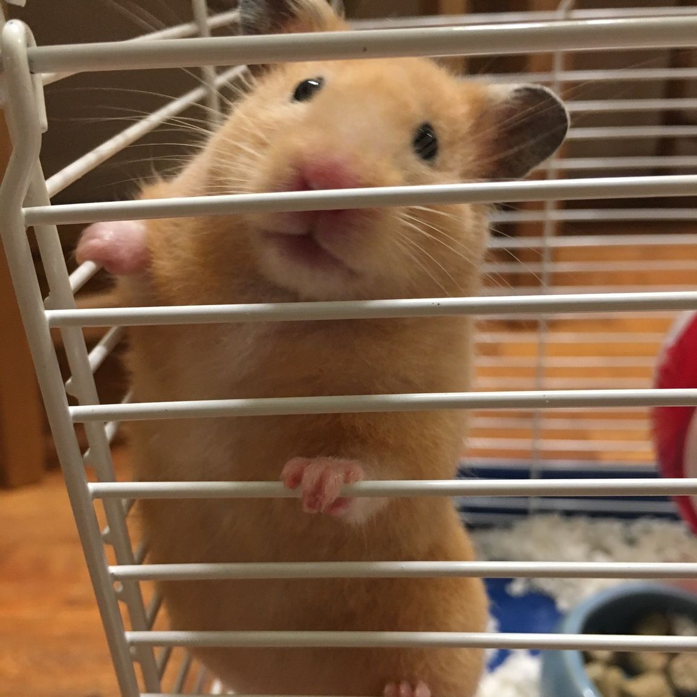
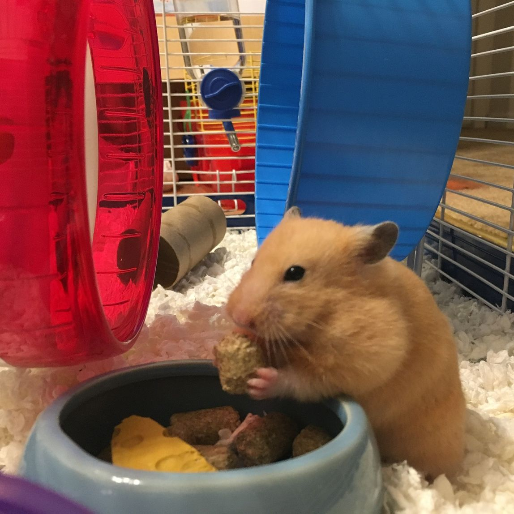
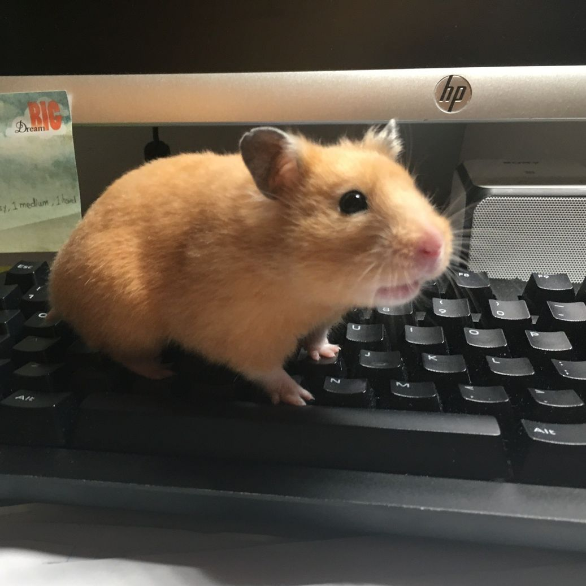
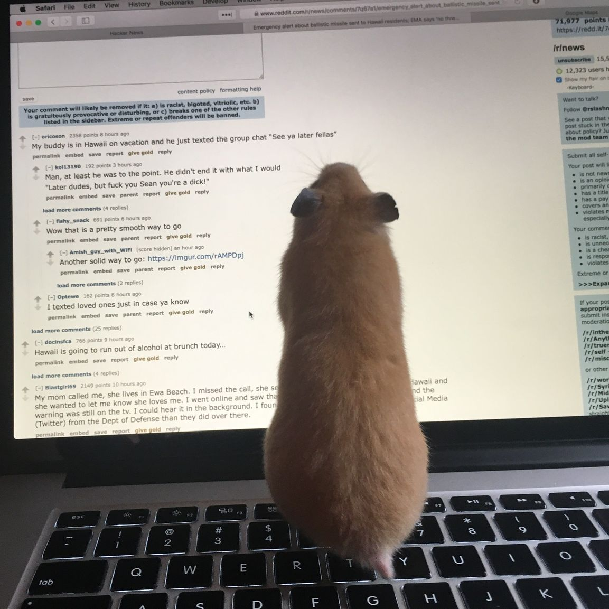

My name is Liyu Pan. I am from Nanjing, China.
This is my Chinese name: 潘丽宇
I am currently a co-terminal student at Rensselaer Polytechnic Institute.
Bachelor's in Computer Science
Master's in Information Technology
I will be graduating in May 2018.
Summer 2017
Built a Neural Network training model using Python and TensorFlow to detect aircraft sensor failure and give estimated correction. Added functionality to the PILOTS programming language in order to perform the self-healing process when the aircraft is in an abnormal mode.
Summer 2016
InsiderThreat: Wrote python scripts to read and process raw data and generate annotated data graph, used ontology to query annotated data and gather information about suspicious actions, and used stream reasoning to find out suspicious users that are potential threats to a company. Contributed to a conference paper as second author about stream reasoning.
CHEAR (Child Health Exposure Analysis Repository): Used CmapTools to map the data ontology to graphs, used Protege to merge different data hierarchies and visualize them, and used SPARQL to query the semantic database stored in RDF format.
I have a cute pet hamster and I cannot stop playing with her whenever I have time.
Here are some very cute pictures of her:



